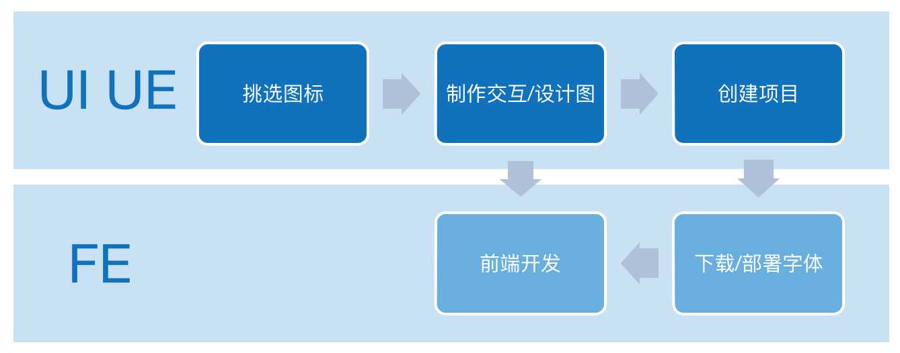

YIcon 平台简介
目标
YIcon 是一个集图标展示、上传、使用于一身的图标平台，目的为采用 iconfont 字体替换项目中图片的使用，以达到缩减体积、风格统一、提高开发效率等目的。不同的部门可以申请在平台上创建大库，业务线可以选择需要的图标添加到购物车，保存成项目之后进行维护。它可以方便的将 SVG 图标转换为字体图标，提供给 UI/UE 和前端开发使用。

优势
与传统制作图标的方式相比，它拥有如下优势：
- 严格的审核流程 图标上传后用户会进行一次编辑，之后会提交到审核，被大库的管理员审核通过后方能入库；
- 可控的项目版本 我们的项目每次变动之后再下载，就会生成新的版本，因此在项目中产生的所有版本都可以追溯查看；
- 完善的权限管理 我们拥有超管后台，可以自由的控制大库、项目管理员的权限。
如果你是去哪儿网内网用户，请直接访问该站点。